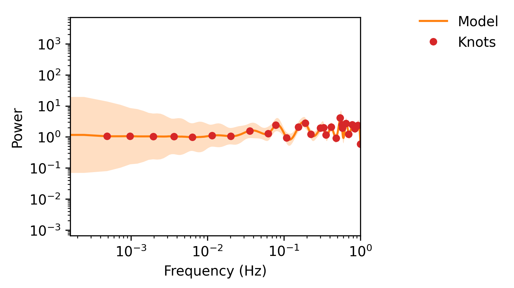

LISA#
Demo on estimating LISA X channel noise PSD from LDC.
This is the raw periodogram of the LISA data. We take a running median approximation to set our knots:

Source Code#
import dataclasses
import os
import h5py
import matplotlib.pyplot as plt
import numpy as np
@dataclasses.dataclass
class LISAData:
t0: float
size: int
dt: float
t: np.ndarray
x2: np.ndarray
y2: np.ndarray
z2: np.ndarray
@classmethod
def from_hdf5(cls, filename: str):
with h5py.File(filename, "r") as f:
t = np.array(f["t"][:])
x2 = np.array(f["X2"][:])
y2 = np.array(f["Y2"][:])
z2 = np.array(f["Z2"][:])
t0 = t[0]
size = len(t)
dt = t[1] - t0 if size > 1 else 0.0
return cls(t0=t0, size=size, dt=dt, t=t, x2=x2, y2=y2, z2=z2)
def truncate(self, n: int, fname: str = None):
"""Truncate the data to the first n samples."""
if n > self.size:
raise ValueError(f"Cannot truncate to {n}, size is {self.size}.")
truncated = LISAData(
t0=self.t0,
size=n,
dt=self.dt,
t=self.t[:n],
x2=self.x2[:n],
y2=self.y2[:n],
z2=self.z2[:n],
)
if fname is not None:
with h5py.File(fname, "w") as f:
f.attrs["t0"] = self.t0
f.attrs["size"] = n
f.attrs["dt"] = self.dt
f.create_dataset("t", data=truncated.t)
f.create_dataset("X2", data=truncated.x2)
f.create_dataset("Y2", data=truncated.y2)
f.create_dataset("Z2", data=truncated.z2)
return truncated
full_fname = "tdi.h5"
trunc_fname = "truncated_lisa_data.h5"
if not os.path.exists(trunc_fname):
lisa_data = LISAData.from_hdf5(full_fname)
# Truncate the data to the first 4096 samples
truncated_data = lisa_data.truncate(40960, fname="truncated_lisa_data.h5")
lisa_data = LISAData.from_hdf5(trunc_fname)
lisa_data = lisa_data.truncate(8192, fname=None) # Truncate to 16384 samples
## Now to fit the data
from log_psplines.datatypes import Timeseries
from log_psplines.mcmc import run_mcmc
from log_psplines.parameteric_approximation import PSDApprox
from log_psplines.plotting import plot_pdgrm, plot_trace
ts = Timeseries(
t=lisa_data.t,
y=lisa_data.x2,
)
ts = ts.standardise()
pdgmrm = ts.to_periodogram()
psd_approx = PSDApprox.fit(ts, window_size=51)
fig, ax = plot_pdgrm(pdgmrm)
psd_approx.plot(ax)
plt.legend()
plt.savefig("lisa_pdgrm.png", dpi=300, bbox_inches="tight")
# Run MCMC to fit the model
mcmc, spline_model = run_mcmc(
pdgrm=pdgmrm,
parametric_model=psd_approx.power[1:],
n_knots=30,
degree=3,
diffMatrixOrder=2,
num_warmup=4000,
num_samples=3000,
rng_key=42,
)
samples = mcmc.get_samples()
plot_trace(mcmc, "traceplot.png")
# Plot the results
fig, ax = plot_pdgrm(
pdgrm=pdgmrm,
spline_model=spline_model,
weights=samples["weights"],
show_knots=True,
use_uniform_ci=True,
use_parametric_model=True,
)
ax.set_title("LISA Data Periodogram with Fitted Model")
plt.savefig("lisa_fitted_model.png", dpi=300, bbox_inches="tight")
fig, ax = plot_pdgrm(
spline_model=spline_model,
weights=samples["weights"],
show_knots=True,
# yscalar=min_power,
use_parametric_model=False,
# freqs=freqs,
)
plt.savefig("just_splines.png", bbox_inches="tight", dpi=300)
Plots#
Trace Plot

Posterior Predictive Check

Spline Fit Only
{kind=link}